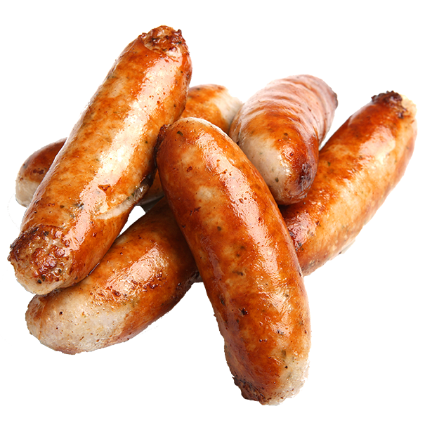
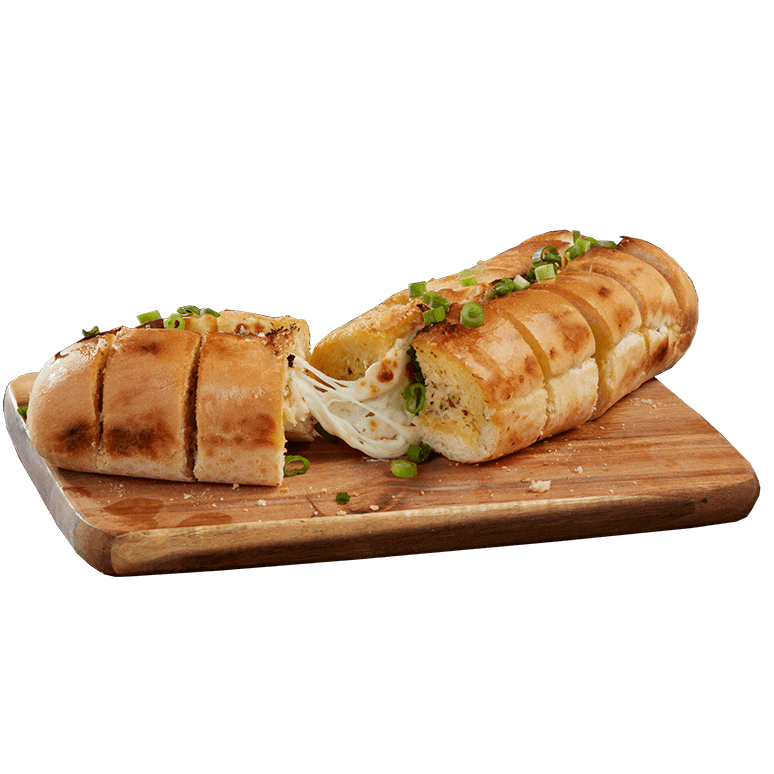

Mars Wurst
Der Klassiker! Unsere köstliche Marswurst, komplett vegetarisch, hergestellt aus unseren hochwertigsten Marsanbauprodukten

Kräuterbaguette
Nur für kurze Zeit! Baguette aus Weizen-Marsanbau mit Kräutern der Bio-Raumstation Hexagon.